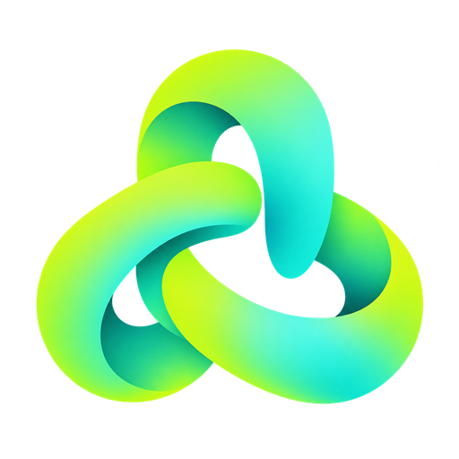
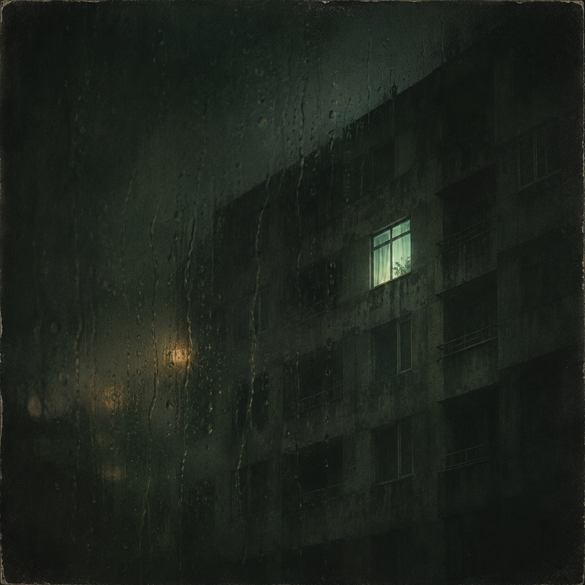

Текст перед глазами.
Открываешь полноэкранный режим — и слова рядом с обложкой. Для треков с таймингами есть синхронная подсветка.

GlueMuseВ РАЗРАБОТКЕНЕЗАВИСИМЫЙ ПЛЕЕР ДЛЯ WINDOWS
Делаем плеер для тех, у кого музыка открыта весь день. Можно искать треки, читать слова и настраивать звук под себя.
Сейчас готовим первую версию. А ниже уже есть что покрутить.
Релиз 1.0 ещё в работе. Торопиться не хотим.

НЕМНОГО ПОИГРАТЬСЯ
Поменяй оформление, нажми на сердечко.
Это макет интерфейса, звук не включится.
в окне напротив
кто-то тоже не спит
ещё один трек
и можно начинать сначала
Несколько строк, написанных для этого макета.Открываешь полноэкранный режим — и слова рядом с обложкой. Для треков с таймингами есть синхронная подсветка.
Эквалайзер и эффекты уже в работе. Чтобы любимый трек звучал так, как нравится именно тебе.
Обои, GIF, цвет и оформление текста. Удачное сочетание можно сохранить и вернуться к нему позже.
ЗАХОДИ, МЫ ТУТ
Проект пока небольшой.
И хорошие идеи сейчас особенно кстати.
Обсудить плеер, принести идею
или показать, что сломалось.
Следить за разработкой
и не пропустить версию 1.0.
Если хочется поддержать проект.
Спасибо — это правда помогает.
Первый публичный установщик появится здесь,
когда версия будет готова. Скачивание — через GitHub.